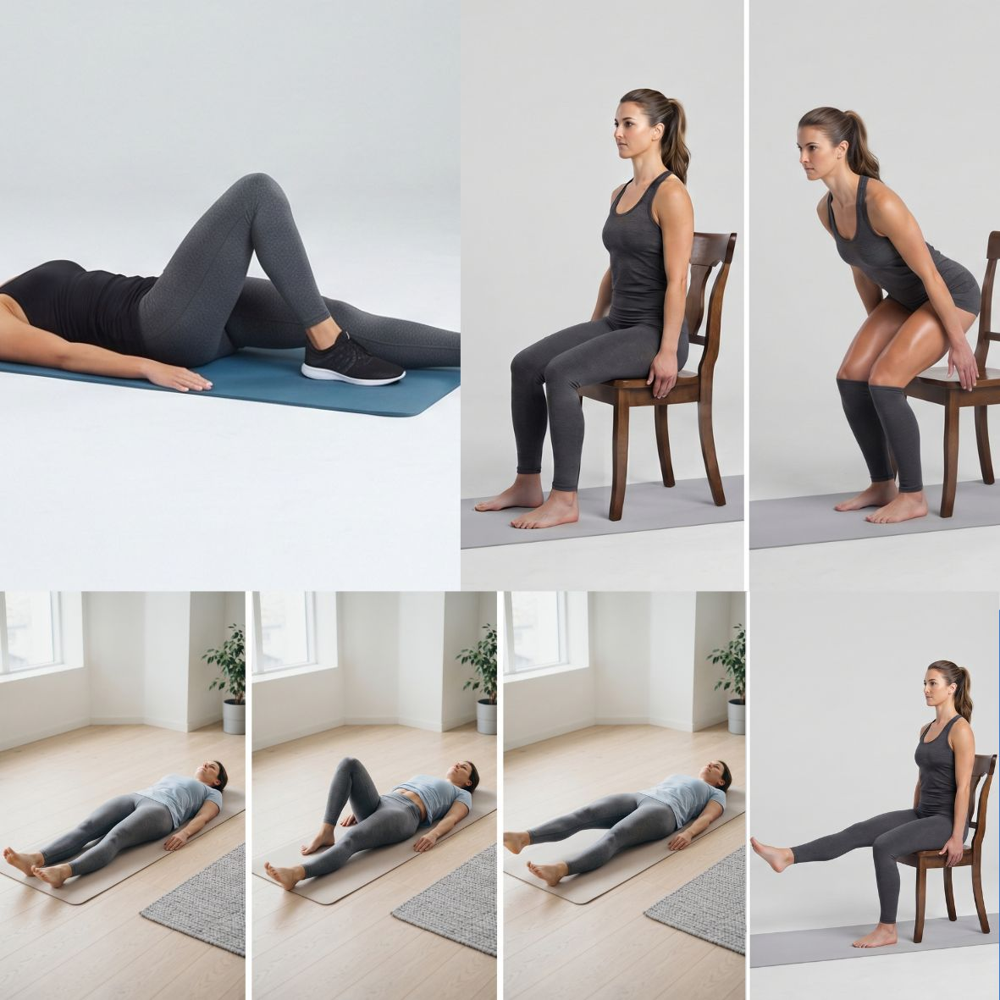
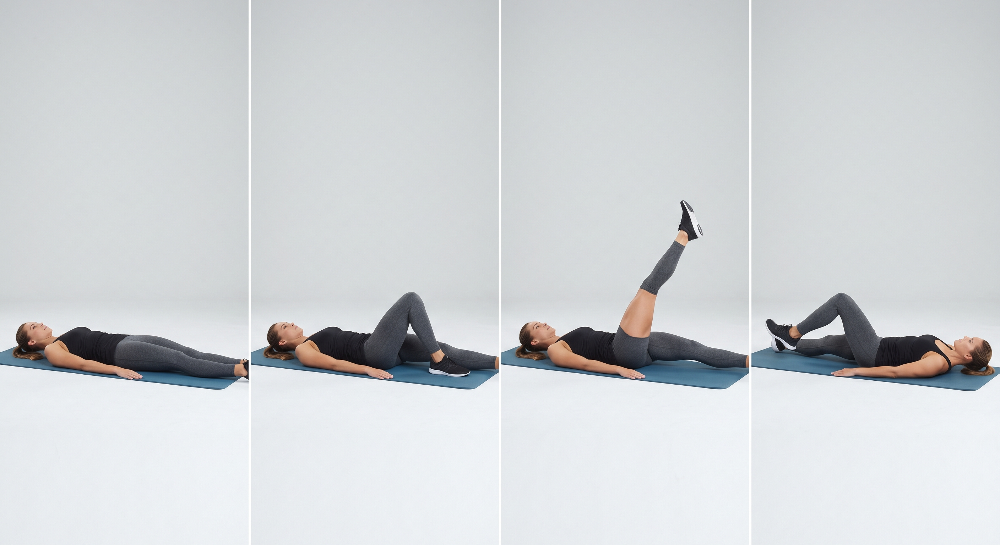
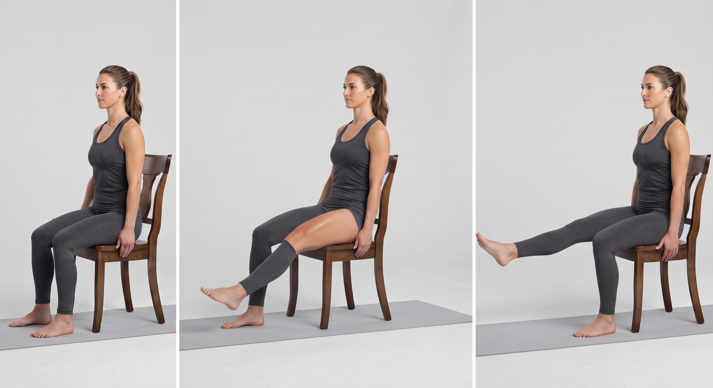
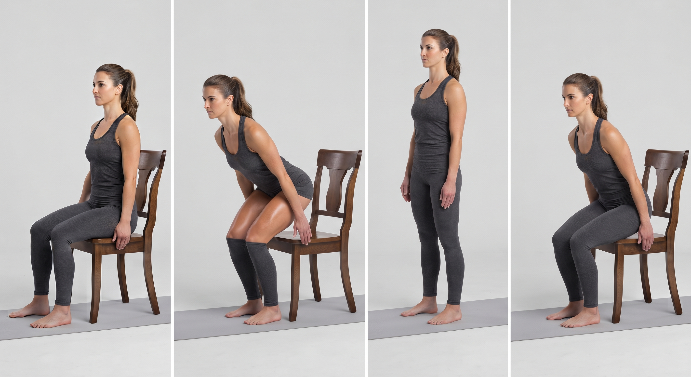
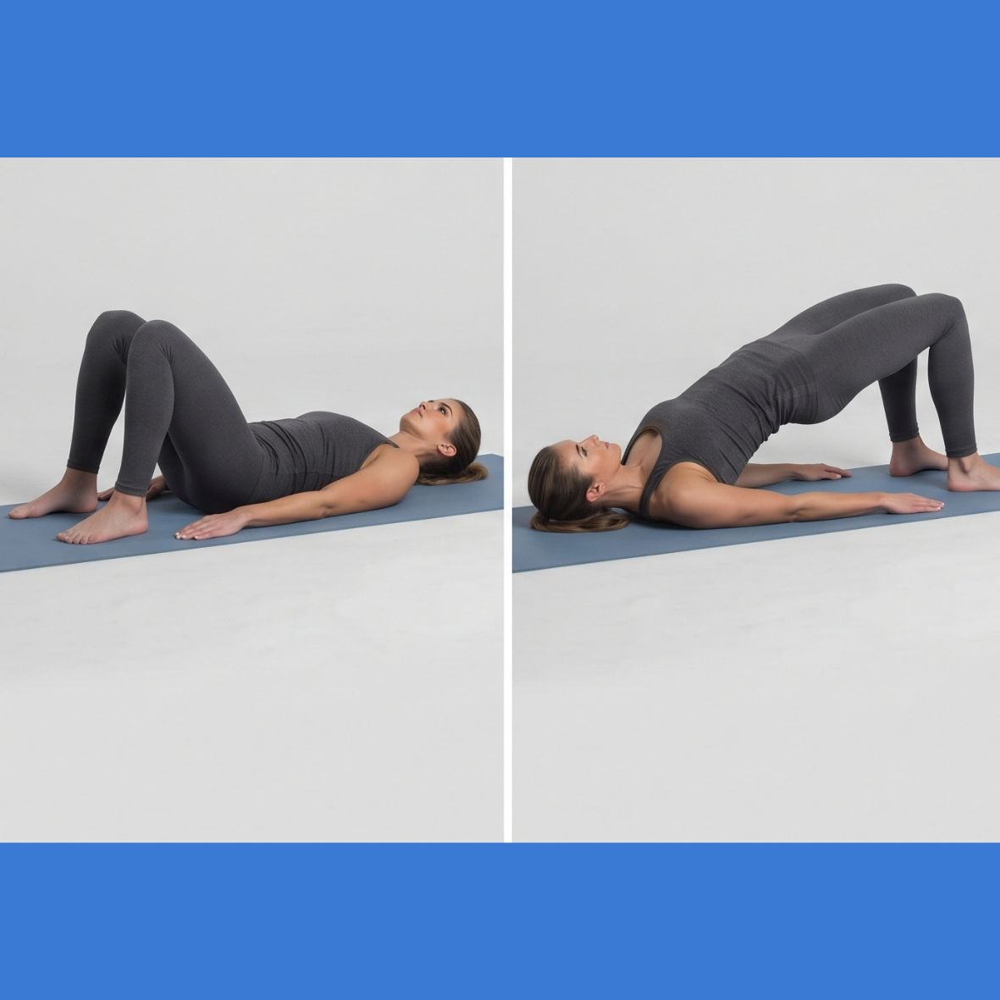
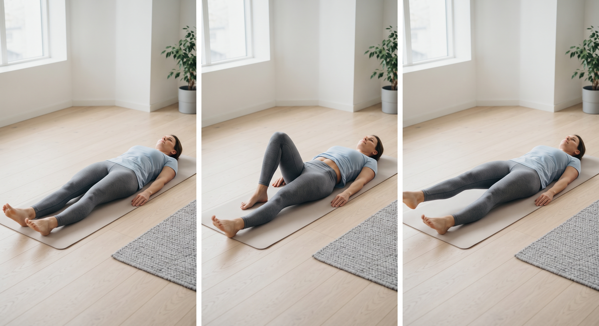

Keeping Your Knees Moving: The Best Exercises for Knee Osteoarthritis
If you have knee osteoarthritis, your first instinct might be to rest your joints and avoid movement. When every step feels stiff or painful, exercise can sound like the last thing you should do. However, medical experts agree that movement is actually one of the best treatments for osteoarthritis. When you sit still, your joints stiffen up. When you move safely, you pump lubricating fluid into your knees, build a natural “brace” of muscle around the joint, and reduce overall pain. Here is a simple, low-impact exercise guide designed to protect your joints and get you moving comfortably again.
The Power Trio: 3 Types of Exercise You Need
To effectively manage knee osteoarthritis, your routine should focus on three specific areas: strengthening the muscles around the knee, keeping the hip and glutes stable, and maintaining flexibility.
1. Thigh Strengthening (The Shock Absorbers)
Your quadriceps (the muscles on the front of your thigh) act as your body's natural shock absorbers. Strong quads take the pressure off your knee joint.

Straight leg raises
Lie flat on your back. Bend one knee and place that foot flat on the floor for support. Keep your other leg straight, tighten the thigh muscle, and slowly lift your foot about 12 inches (30 cm) off the ground. Hold for 3 seconds, then lower slowly. Do 10 repetitions per leg.

Seated knee extensions
Sit up straight in a sturdy chair. Slowly straighten one leg out in front of you as far as comfortable. Hold for 5 seconds, then slowly lower it. Do 10 repetitions on each side.
2. Hip & Glute Stability (The Alignment Crew)
If your hips and buttocks are weak, your legs can cave inward, causing uneven wear and tear on your knee joints.

Sit-to-stands
Sit on a standard dining chair. Lean your torso slightly forward, press firmly into your feet, and push yourself up to a full standing position without using your hands. Slowly lower yourself back down to the seat. Perform 5 to 10 repetitions.

Glute bridges
Lie on your back with your knees bent and feet flat on the floor. Squeeze your buttocks and push through your heels to lift your hips toward the ceiling. Hold for 5 seconds, then slowly lower. Do 10 repetitions.
3. Mobility & Flexibility (The Stiffness Breakers)
Stretching ensures your joint retains its full range of motion, preventing that stubborn “frozen” feeling in the morning.

Heel slides
Lie on your back with your legs straight. Slowly slide your heel along the floor toward your buttocks until you feel a gentle stretch in the knee. Slide it back out smoothly. Repeat 10 times per leg.
Seated hamstring stretch
Sit on the edge of a chair. Extend one leg straight out in front of you with your heel on the floor. Keep your back completely straight and gently lean forward from your hips until you feel a gentle pull behind your thigh. Hold for 30 seconds. Repeat 3 times per side.
How to Exercise Safely: The “Traffic Light” Rule
It is entirely normal to feel a mild dull ache or stiffness when you start exercising. However, you should never push through severe pain. Use this simple traffic light system to guide you:
- 🟢 Green light (pain 0–2/10): mild discomfort or stretching. Safe to proceed!
- 🟡 Yellow light (pain 3–5/10): a noticeable ache, but manageable. Proceed with caution, or reduce the number of repetitions.
- 🔴 Red light (pain 6–10/10): sharp, stabbing, or sudden pain. Stop immediately.
The Bottom Line
When it comes to osteoarthritis, consistency matters far more than intensity. Doing a few low-impact movements for 10 minutes every day is much better for your joints than a grueling 1-hour workout once a week.
Pair these exercises with low-impact cardio like swimming, stationary cycling, or daily walks on flat surfaces to keep your knees happy, lubricated, and moving for years to come.
Always consult your doctor or a physiotherapist before starting a new exercise routine, especially if you experience sudden swelling, clicking, or locking in your joints.
Knee pain not improving with home exercises? Message directly and ask.
Message on WhatsAppThis article is general health information and does not replace a medical consultation. In a medical emergency, call SAMU (114) or go to your nearest hospital.